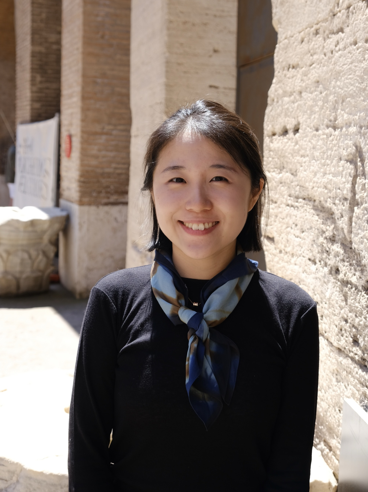

<div class="homepage">
  

  <div class="intro-text">
    <b>Jian Cui</b>
    <p>PhD student, Harvard Linguistics</p>
    <p>Email: jiancui@fas.harvard.edu</p>
    <p>CV: <a href="https://drive.google.com/file/d/1R39A_2oLuyTAJEGgKcekzYQz66OUp6fM/view?usp=sharing">here</a></p>
    <p>[More about <a href="https://cuicuiyou.github.io/aboutme/"><i>me</i></a>]</p>
  </div>

  <b>Research interests:</b>
  <ul>
    <li> Phonology </li>
    <li> Tonology [<i>Grammatical tone</i>] </li> 
    <li> Morphology </li>
    <li> Morphology-phonology interface </li>
    <li> First language acquisition [<i>Word segmentation, Tonal acquisition, International adoptees</i>]</li>
    <li> Syntax [<i>Voice and argument structure</i>] </li>
  </ul>
</div>

<style>
body {
  background-color:#DEF7D9;
}

.homepage {
  font-size: 18px;
}

p {
  margin: 10px 0;
}

.profile-photo {
  float: left;         /* 照片浮动到左边 */
  margin-right: 20px;  /* 照片和文字的间距 */
}

.intro-text {
  overflow: hidden;    /* 避免文字围绕过长 */
}
</style>
